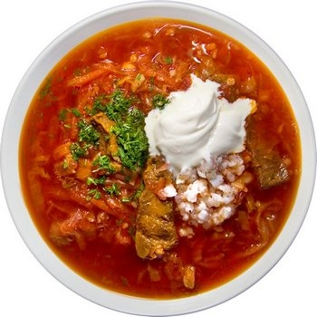
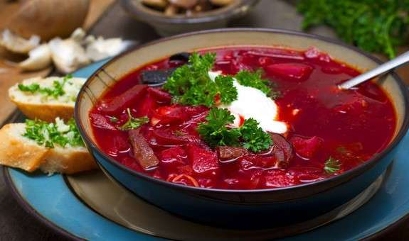
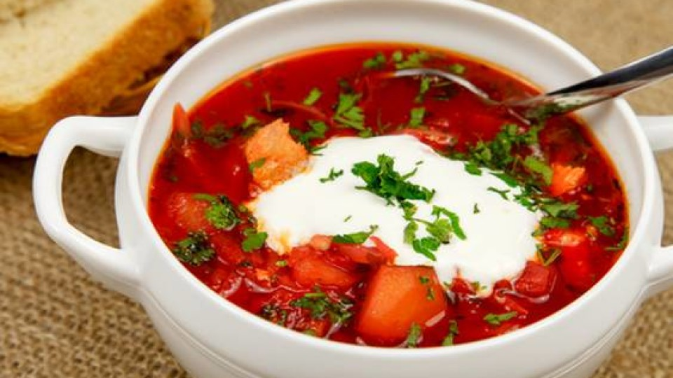

Обов'язковою складовою борщу є буряки, що надають йому особливого смаку і кольору. До складу борщів, крім буряків, звичайно входять такі продукти, як капуста, морква, петрушка, картопля, цибуля, помідори (або томатне пюре), а також яблука, квасоля, кабачки та ін. Український борщ готують на кістковому або м'ясо-кістковому бульйоні. Також можна приготувати борщ на грибному відварі або курячому бульйоні. Щоб надати борщу специфічного кислуватого присмаку до бульйонів (зазвичай готових) додають квас-сирець, сік квашених буряків, бурякову закваску (настої) тощо. Різні варіанти борщів найчастіше носять назви місцевості, з якої вони походять: борщ волинський, київський, кіровоградський, полтавський, чернігівський та ін. Особливо популярний український борщ сьогодні поширений не лише по всій Україні, а й у багатьох країнах світу. Неперевершені смакові якості борщу зобов'язані майже двадцятьом харчовим продуктам, що входять до його складу.
  